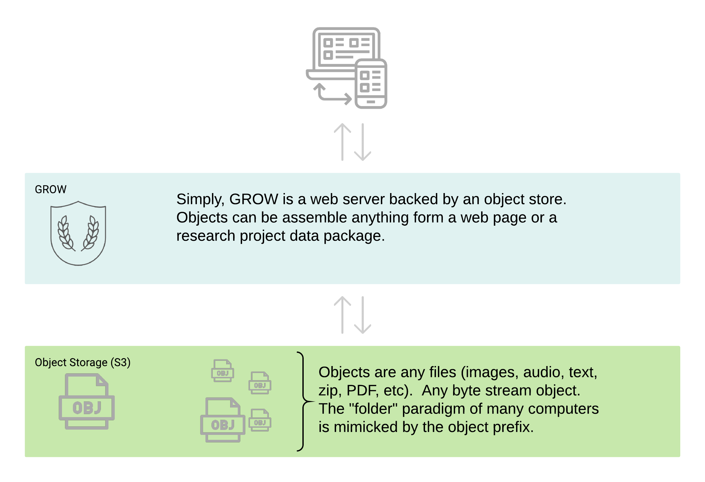

Indexing¶
Notes for how indexes of structured data on the web can be done.
Tools for the project¶
Gleaner: ( https://github.com/earthcubearchitecture-project418/gleaner) A tool for harvesting, validating and indexing structured data on the web.
Fence: A testing environment leveraging SHACL, sitemaps and JSON-LD framing approaches in support of Gleaner development.
Tangram A service wrapper around PySHACL to allow web based SHACL validation of data graphs.
GROW A program that implements the RDA Digital Object Cloud pattern on top of Amazon S3 API based object stores. It bridges Gleaner and Mercantile to the web.


Mercantile A GraphQL server that connects to graph databases. It fronts SPARQL calls to a data interface defined from the schema.org type Dataset “class” (ref: https://schema.org/Dataset) or other JSON-LD schema.
Options¶
While Gleaner will be used as it was developed by the contractor. However, that is more due to it’s highly adaptable and hackable nature. There are many other tools that can be used and might be leveraged in a production environment including:
Work on notebooks and other tools for testing by participants. Example
Indexing¶
RDF graph from the collected JSON-LD (part of Gleaner default output)
Full text index (for now via Lucene in Blaze. Perhaps later link in Elastic)
Spatial index (and exchange formats). We have workable pipelines for this in Gleaner, however the graphs typically don’t provide spatial in a format easy to work with here. The results are spotty.
Connections to external graphs. Nothing done on this front, but would be great to see. Results as nanopubs to integrate. (Gleaner does basic nanopub prov now)
Index the data (not the metadata) via tika pipeline. Not planned as part of this work, but was done in P418, could be leveraged if a group had interest. Likely something to do local to a data provider and expose as a generated graph.
Utilization¶
Searching the indexes (Mercantile)
Data access via the results (links to distribution nodes)
Notebooks to search and then access the data or mine the metadata objects at the hub.
Web components to enables inclusion at partner domains.